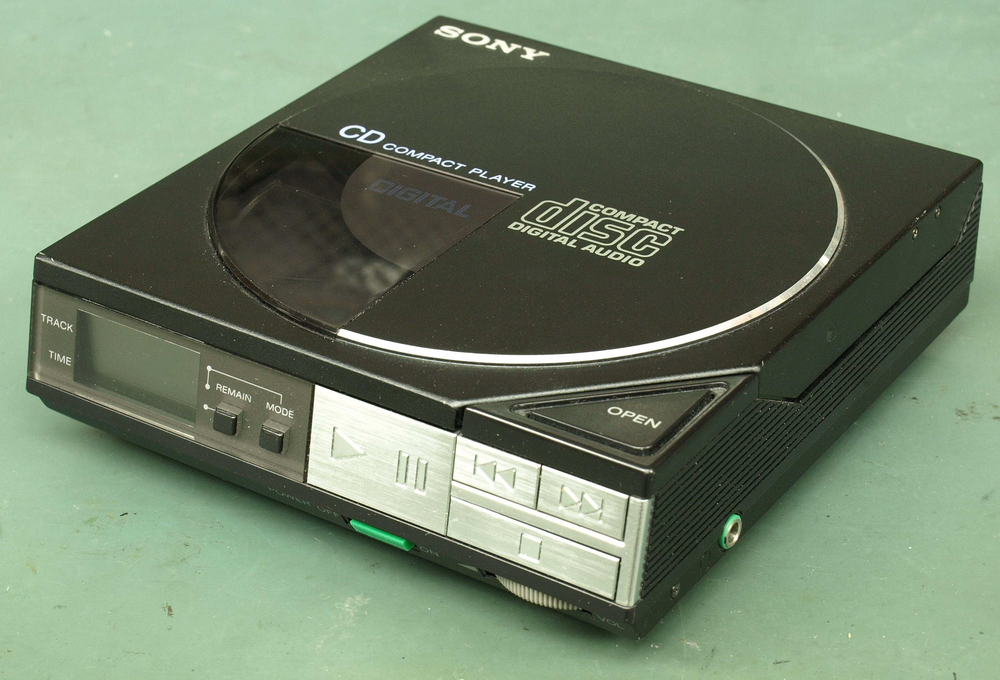
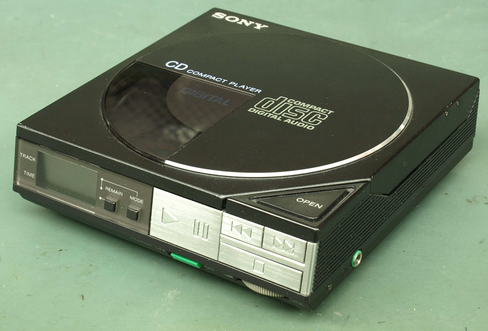

About Walkman
 

The Walkman, a revolutionary portable cassette player, was introduced by the Sony Corporation in 1979, fundamentally changing the way people listened to music. Sony, founded in 1946 by Masaru Ibuka and Akio Morita, had already established itself as a leading innovator in consumer electronics. The Walkman, originally called the "Soundabout" in the United States and the "Stowaway" in the United Kingdom, allowed users to listen to their favorite music on the go, ushering in the era of personal audio entertainment. Its compact design, combined with the introduction of lightweight headphones, made it immensely popular worldwide. The success of the Walkman solidified Sony's reputation as a pioneer in portable technology and contributed significantly to the company's growth and global influence in the electronics industry. Over the years, Sony continued to innovate with various iterations of the Walkman, adapting to new formats such as CDs, MP3s, and digital streaming, ensuring its continued relevance in the ever-evolving landscape of music consumption.
The Walkman radio brand has personalized music listening over the years. After Sony released it in 1979, portable music was greatly associated with it. Walkman has developed over time to be aware of emerging technology and sustain its dedication to providing high-quality audio experiences. Our mission is to provide music enthusiasts with innovative and reliable music devices that enhance their listening experience. With a rich history going back decades, we continue to push the boundaries of portable audio technology, ensuring that our customers can enjoy their favorite music wherever they go.